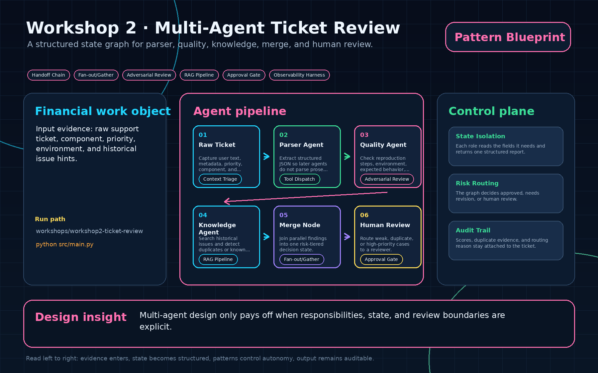
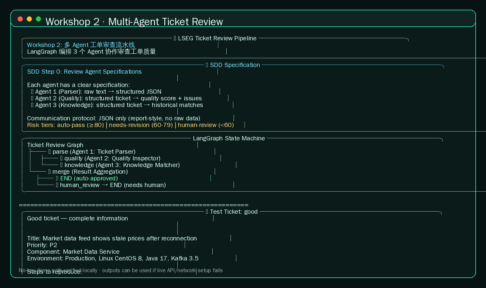

01
Raw Ticket
Capture user text, metadata, priority, component, and environment.
Context TriageA structured state graph for parser, quality, knowledge, merge, and human review.

Capture user text, metadata, priority, component, and environment.
Context TriageExtract structured JSON so later agents do not parse prose again.
Tool DispatchCheck reproduction steps, environment, expected behavior, and evidence.
Adversarial ReviewSearch historical issues and detect duplicates or known incidents.
RAG PipelineJoin parallel findings into one risk-tiered decision state.
Fan-out/GatherRoute weak, duplicate, or high-priority cases to a reviewer.
Approval Gatecd workshops/workshop2-ticket-review python3 -m venv .venv source .venv/bin/activate pip install -r requirements.txt cd src python main.py

Each role reads the fields it needs and returns one structured report.
The graph decides approved, needs revision, or human review.
Scores, duplicate evidence, and routing reason stay attached to the ticket.
Multi-agent design only pays off when responsibilities, state, and review boundaries are explicit.